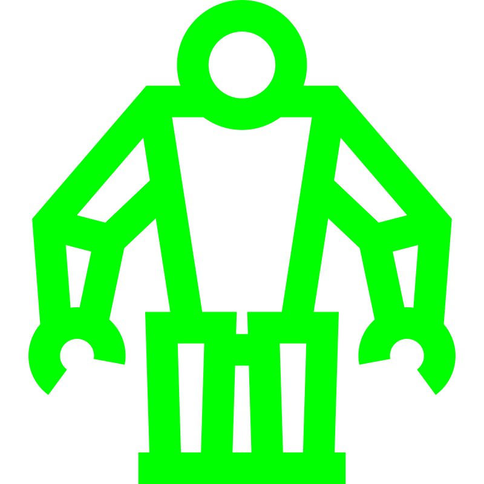

Various PIC projects
In this school project I was programming five projects and a menu using the PIC18F46K22 microcontroller in C.

Tech: C, PIC microcontrollers
In this school project I was programming five projects and a menu using the PIC18F46K22 microcontroller in C.
Tech: C, PIC microcontrollers

I've been able to take a course on working with embedded systems at school. The main curriculum is programming in the C language and programming the PIC18F46K22 processorby MicroChip.
The whole concept of low level programming is interesting to me and I will be doing some more when possible.
The final project of this course was creating 5 tasks:
This was probably the biggest coding project I have done in regards to tracking state inside a project. So if you want to see how I did it, you can check out the code on my GitHub.